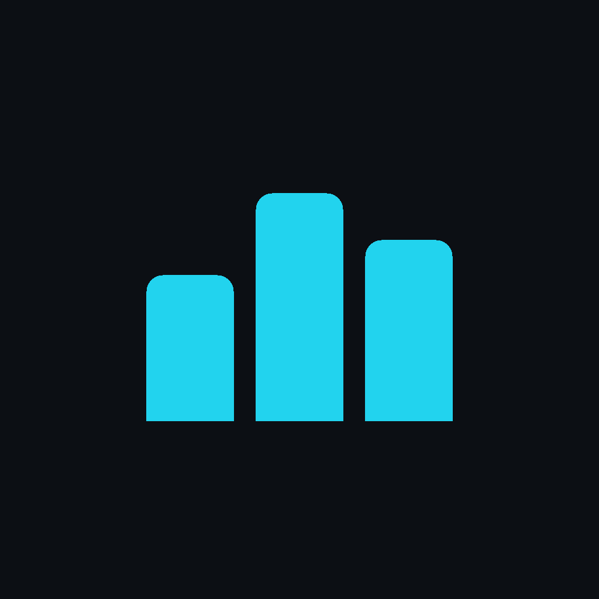

Track Tracker
The iPhone shell is installed. Set CAPACITOR_SERVER_URL to your staging
HTTPS origin, run npm run mobile:sync, then run the app again from Xcode.

The iPhone shell is installed. Set CAPACITOR_SERVER_URL to your staging
HTTPS origin, run npm run mobile:sync, then run the app again from Xcode.